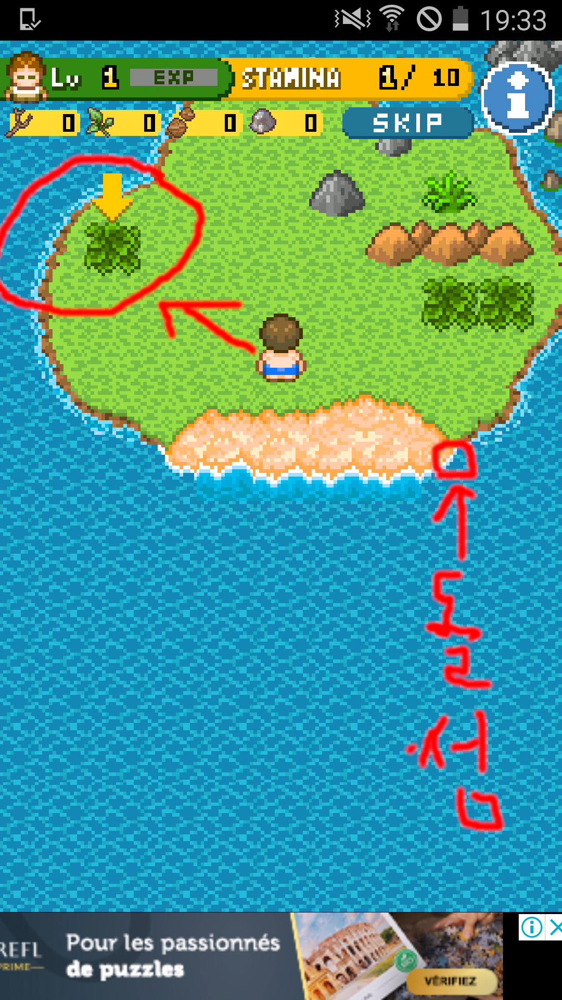
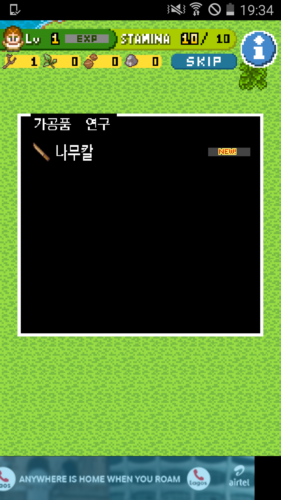
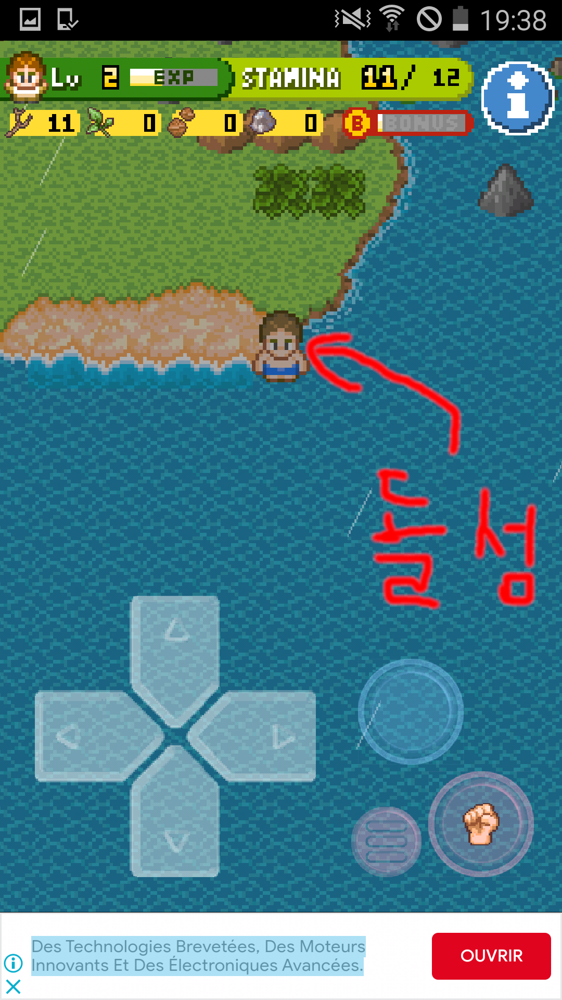
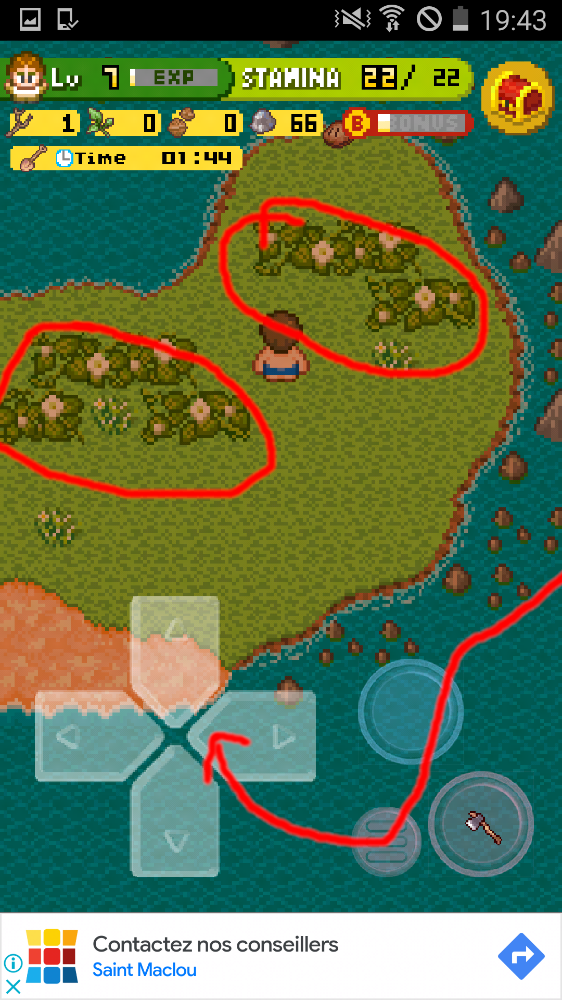

무인도에 오면 이런 식이다.
화살표대로 따라갑시다. 딸기를 얻고, 나뭇가지를 얻으면 나무칼 연구가 나옵니다.
그리고 나무칼로 딸기를 잘라보면 딸기 자르기가 나옵니다. 이제 밖으로 나가야 해요. 맨아래로 가면 나갈 수 있어요. 그리고 돌이 많은 곳으로 갑시다.

돌을 주으면 허접한 도끼 연구가 나옵니다. 도끼를 만들면 나무들을 캘 수 있습니다.
저녁이 됐네요! 그럼 빨리 돌섬으로 가서 남서쪽으로 수영을합니다.
그러다보면 아래 그림에서 보이는 섬이 있을거에요.
밤 까지 기다립니다...
